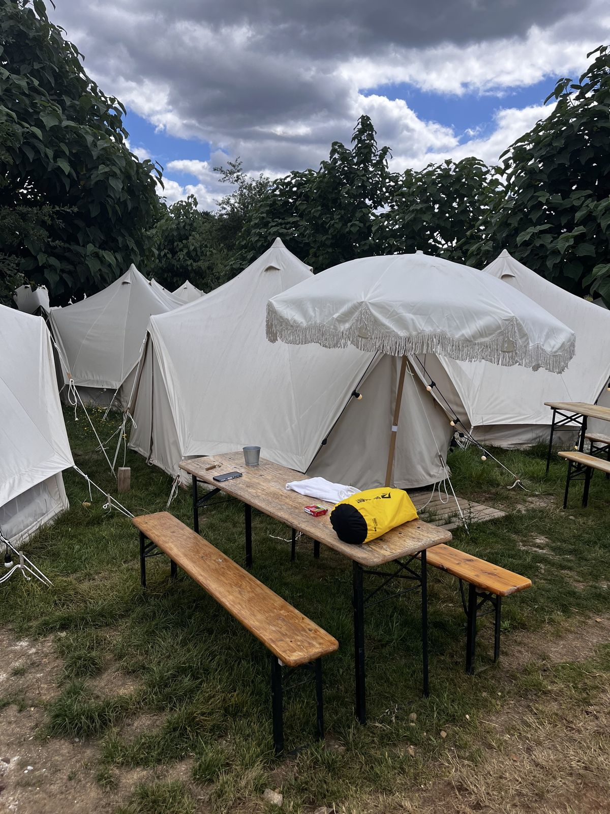
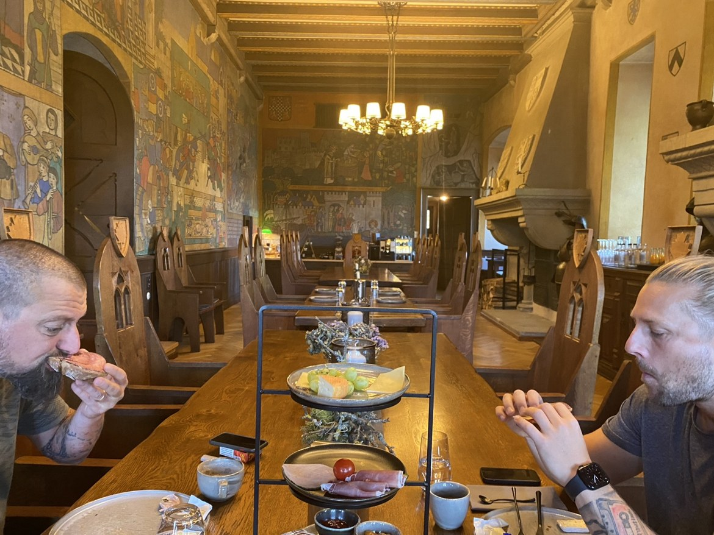

BLOG · MONEY
How Much Money Should I Budget for the Camino?


- TopicMoney
- How we sleepPrivate rooms and pensions
- Bed averageAbout 50 euros each per night
- On the ground60 to 80 euros a day, all-in
Short answer: budget 60 to 80 euros a day on the ground if you sleep in private rooms the way we do. That covers the bed, food, drink and the odd beer. Our beds alone average about 50 euros each a night. Flights sit on top of that, and flights are the part that swings the most.
Everything in this post comes from our own caminos - our stage notes, our bookings and our photos. If we did not walk it or live it, it is not in here.
Most camino budget advice online is dorm math. A cheap bunk, pasta cooked in an albergue kitchen, a daily number that sounds too good to be true. We do not walk that way, so this is not that post. We sleep in private rooms, pensions, small hotels and apartments, booked a day or two ahead as we go. These are the numbers from doing it that way, eight caminos in.
What a bed costs us
In June 2022, planning the Rheinsteig, we did the math in our chat: our accommodation together averaged about 150 euros a night for the three of us. Split three ways, that is about 50 euros each per night. That average has held up well enough that we still plan around it.
The range is wide, and the cheap end is real. Planning Camino 2 in 2021, a place in Leon was 20 euros each, or 30 each for a really nice place. Portugal was kind to us more than once - apartments there often came in under the average per head. For Camino 4 we booked the same Santiago apartment we had used in 2019: 130 euros for the whole apartment in 2023, down from 150 in 2019. And on Camino 7, two bell tents at O Pedrouzo came to 59.30 euros total - about 30 euros each - and that tent is still talked about as the best bed of the whole trip.
The top end exists too. On the Rheinsteig we slept one night in a castle, Burg Gutenfels above the Rhine: 310 euros for the night, 100 euros each. It was worth it once. It was also double our average for a bed, and nobody suggested doing it twice.
What a whole day costs
In February 2025, planning Camino 7, the target in our chat was plain: get by on 60 to 80 euros per day for food, drink, sleep and beer. That is the honest all-in number for walking our way - a café breakfast, something simple in the middle of the day, a proper supper, and a bed with a door that locks.
For scale, in 2021 we planned Camino 2 on 50 euros a day for everything. By 2022 the bed alone was averaging 50 each. Prices went up after Covid and they did not come back down. Anyone quoting you 2021 prices in 2026 is working from an old map.
If you walk in a group, the split helps. Three of us in one apartment pay apartment money once, not room money three times. Two of you in one room pay the room once. The per-person bed cost in this post already assumes that kind of sharing where the record has it.
Do the math for your trip
Take our numbers and run your own days through them:
- One week, private rooms: 7 days at 60 to 80 euros = 420 to 560 euros each on the ground.
- Two weeks, private rooms: 14 days at 60 to 80 euros = 840 to 1,120 euros each on the ground.
- Beds only, two weeks: 14 nights at about 50 euros = about 700 euros each. If a quote for rooms lands far above that, you are paying city prices or splurge prices.
- Then add the flight. That is a separate number and it is not small - see the next section.
- Add one treat on purpose. A castle night, a good hotel in Santiago at the end. Budgeted treats do not wreck a budget. Unbudgeted ones do.
Rest days count in this math. A rest day costs the same bed and food as a walking day, and usually a bit more beer. We have taken rest days on most trips and they are in our averages.
Flights are the wild card
Same trip, same week, very different flight bills. For Camino 4 in May 2023, the brothers flew from Germany for 410 euros per person, complete. Mike's flights from Canada came to about 1,000 euros, over 8 different airports by the time the trip was done. Canada is simply farther from the trail than Germany is, and the price shows it.
Island trips cost more to reach. Madeira was our most expensive start: in the Camino 5 planning, one quote for Funchal flights came in around 840 euros a person return, while a hop from Lisbon to Madeira was about 130. The walking in Madeira was not expensive. Getting to the start line was.
The rule we use now: price the flight before you fall in love with a route. A cheap walk with an 800-euro flight is not a cheap trip.
The cheapest way to do it our way
We are not the cheapest walkers on the trail, and this post is not pretending otherwise. But inside a private-room trip, these are the things that actually saved us money:
- Apartments when there are three of you. One 130-euro apartment in Santiago beat three rooms by a wide margin, and you get a kitchen and a washing machine with it.
- Book a day or two ahead, not months ahead. Prices move both ways and so do plans. The same apartment cost less in 2023 than in 2019. Booking the night before also means you only pay for the trip you are actually walking.
- Take the plain place on plain nights. The 20 and 30-euro-each nights are in our record for a reason. Save the nice places for rest days and the finish.
- Walk, do not transfer. Every taxi ride is most of a bed. Trains between routes are the exception - the Rheinsteig split had about 100 euros for a train ticket, and that bought us a whole route change.
- Let one splurge be the splurge. The castle was 100 euros each, once, and it is still the night everybody talks about. At that rate every night, the bed budget doubles.
What we do not save on: boots and gear are bought at home and last for years and several caminos, so they are not in the daily math. And travel insurance is not a saving. A clinic visit in Santiago in 2021 cost about 250 euros on the spot. The walk continued, but the bill was real.
The honest summary
Private rooms cost more than dorms. That is the whole trade, and it is out in the open: about 50 euros each a night for the bed, 60 to 80 a day all-in, flights on top.
What the extra money buys us is sleep, a door that locks, and our own bathroom at the end of a 25-kilometre day. At our age, that is not luxury. That is how we keep walking, trip after trip.
So count it in this order: the flight first, then the days, then one treat. If the number works, go. The camino is worth budgeting for properly - and a budget you believe is the one you will actually keep.
From the trail to the page
These posts are the tidy lessons. The book is where they came from. Buen Camino, Brother: A WhatsApp Story is built from our WhatsApp messages - Mike in Canada, Nicki in Germany, planning in real time since 2019. Choosing routes and dates, settling daily distances, booking beds, changing plans mid-walk. The ups: eight caminos across Spain, Portugal, Germany and Austria. The downs: illness, a clinic visit, two pandemic years apart - and ordinary life between the walks, the hard parts and the good parts. And underneath it all, a friendship that started between strangers in 2019 and is still going almost every day. Learn from the real planning, not just the polished advice.
Coming January 2027. Join Camino Dispatches
Walking your own Camino? Keep the journal as you go. I built Townstamp after eight caminos of wishing for exactly this: every entry stamped with the town and the date, photos kept with the words, and a book-style PDF of the whole trip when you get home. Townstamp